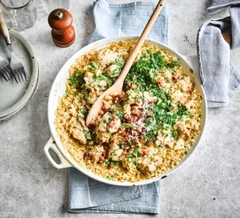

Chicken Risotto

Ingredients
- 1 tbsp olive oil
- 100g smoked bacon
- butter
- 1 large onion
- 5 skinless chicken
- chicken stock
- 2 cloves of garlic
- 300g risotto rice
- 50g parmesan cheese
Steps
- Heat the oil in a deep, wide frying pan over a medium-high heat and fry the lardons for 5-6 minutes until golden and crisp. Scoop out onto a plate.
- While the chicken and onion are cooking, tip the stock into a large saucepan and bring to a gentle simmer, then turn the heat to low and keep warm on the back of the hob. Sprinkle the rice over the chicken, and stir to coat the rice in the oil and butter.
- Keep adding the stock until the rice is tender with a little bite, about 20 minutes (you may not need all the stock). If you’ve used all the stock but the grains are still firm, add a splash of water and keep stirring until tender.
- Remove the risotto from the heat, and fold in the parmesan, cooked lardons, parsley, and the remaining 1 tbsp butter. Cover and rest for 5 minutes before serving.